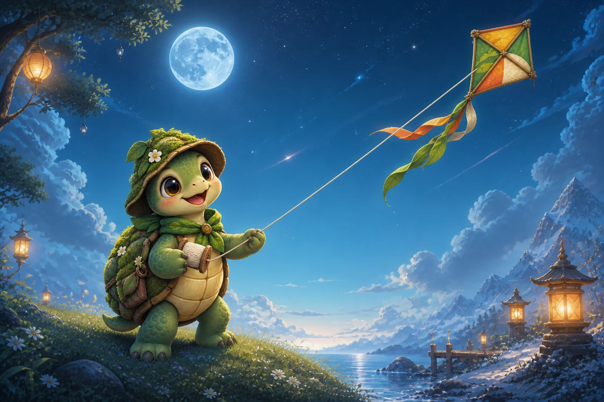
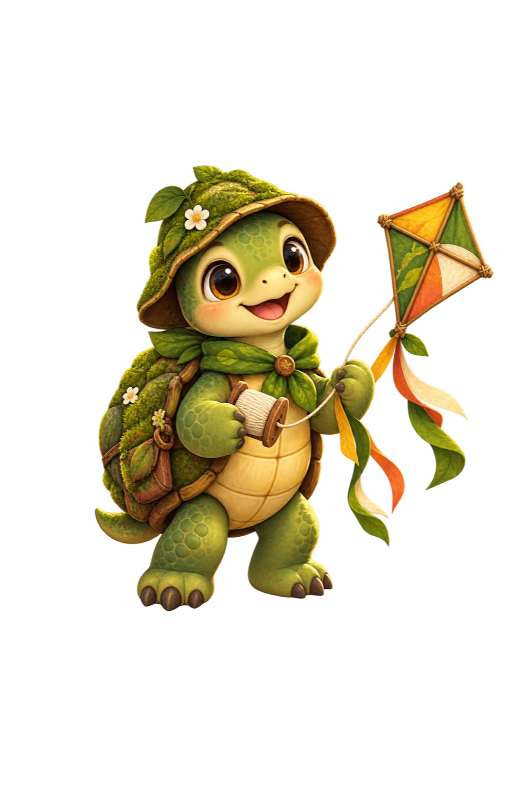

WEIGHTPLAY · GENERALKite Keeper

6+ · FAMILY · ORIGINAL PROTOTYPE
Kite Keeper
Choose the wind. Find the lantern dock.
3 sky routes · 3 gusts each
Best checks: —

How to play
Choose one wind card at a time. Reach the lantern dock in exactly three gusts.
STAGE MAP
Sky routes
Choose one wind card at a time. Reach the lantern dock in exactly three gusts.
BATTLE
Meadow Lift
Lantern dock3, 2
Wind cards
Choose a wind card
RESULT